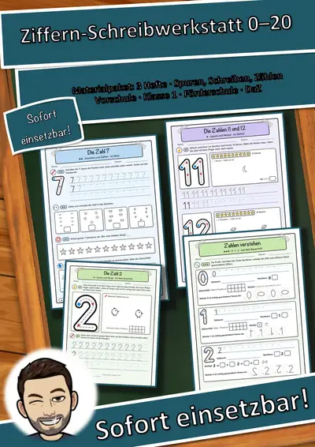

Finger – Hörverstehen mit Lückentext (interaktiv)
Interaktives Arbeitsblatt zum Hörtext „Finger“: Hörtext anhören, zwei Auswahlfragen (★), Lückentext mit Wortspeicher (★★), Paare bilden (★★) und eine Zusammenfassung in zwei Sätzen (★★★). Mit automatischer Überprüfung. Passt zum Snice-Arbeitsblatt „Finger – Lückentext mit Wortspeicher, Hörverstehen und Suchsel“.
FachDeutsch
KlasseKl. 5–6
SchulformSek I Mittlere Schulform
MaterialartInteraktives Material
Ähnliche Materialien

Finger Lückentext mit Wortspeicher Hörverstehen und Suchsel

Hand Lückentext mit Wortspeicher Hörverstehen und Suchsel

Tastschreiben - Tastschreiben Laminate

Ziffern-Schreibwerkstatt Materialpaket: Zahlen 0 bis 20 schreiben, zählen, verstehen – 3 Hefte in 3 Stufen (Vorschule, Klasse 1, DaZ)

Ziffern-Schreibwerkstatt Ziffern 6 bis 10 im Meer – Spuren, Schreiben, Zählen in 3 Stufen (Vorschule, Klasse 1, DaZ)

Ziffern-Schreibwerkstatt Ziffern 0 bis 5 auf dem Bauernhof – Spuren, Schreiben, Zählen in 3 Stufen (Vorschule, Klasse 1, DaZ)

Mein Sporttag – Abschluss-Sportfest mit Spielstationen – Lesespurgeschichte mit Rätselaufgaben (Klasse 1)